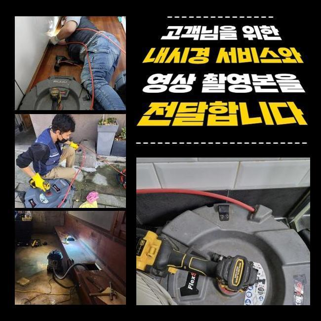
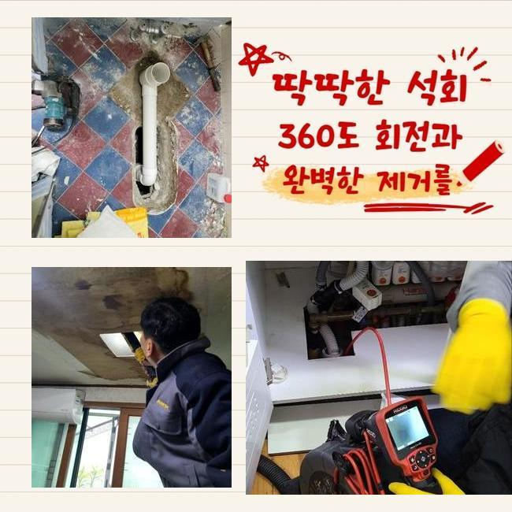
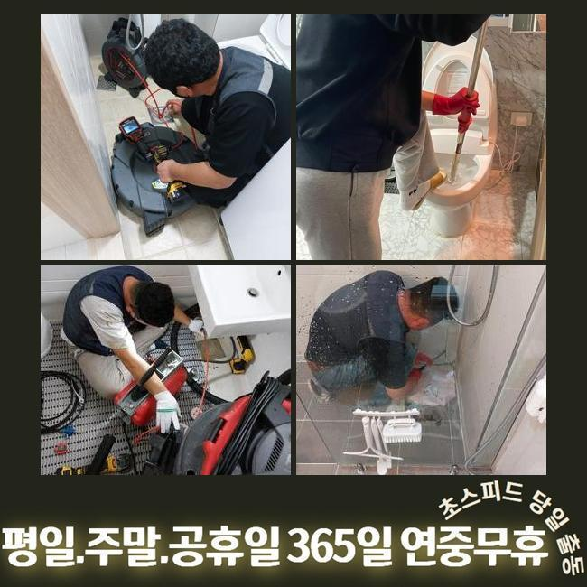
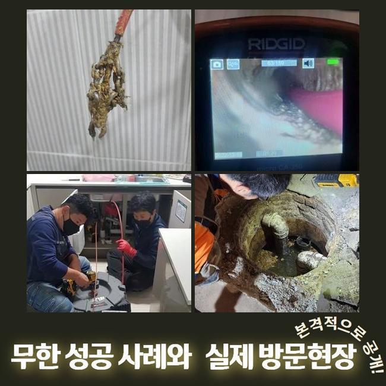
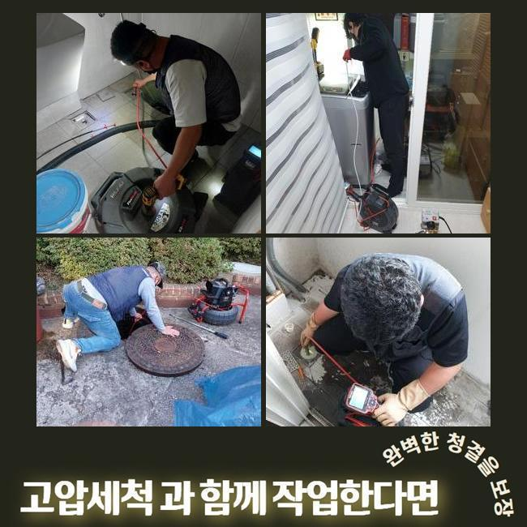
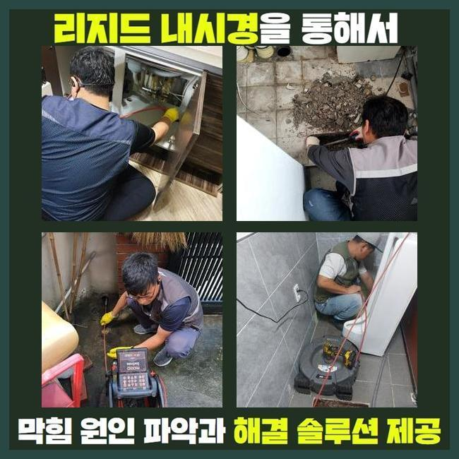
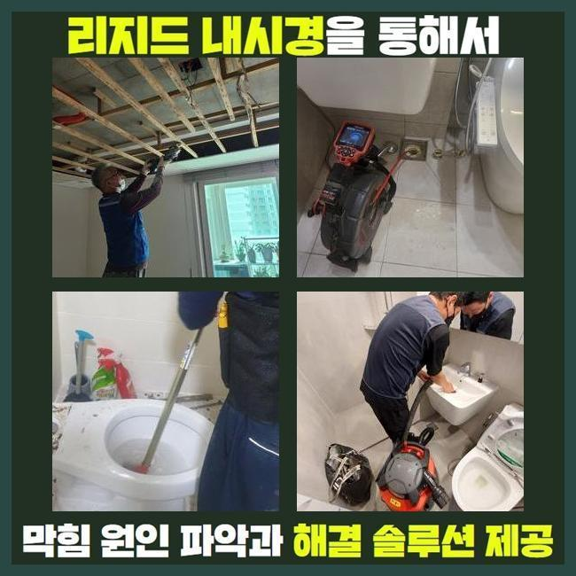

🏠 중구 명동하수도역류 수하동 하수구청소 출장설비
용인 싱크대막힘 전문 시공 후기

📋 작업 개요
- 위치: 용인
- 서비스 유형: 싱크대막힘, 하수구막힘, 배관막힘, 역류해결, 배관청소, 고압세척, 악취차단
- 작업 일시: 2024. 12. 31. 12:01
- 업체명: 하수구수사대 (010-5615-2118)
🔍 문제 상황
중구 명동하수도역류 수하동 하수구청소 출장설비
저희들은 하수관쪽의 여러가지의 시공을 도맡고 있어요
전문가가 상시로 대기하여 고객께서 처해있으신 고장에 바로바로 응대해드린답니다
금번에는 주방배관막힘 해소 공정을 안내드리겠습니다
전주에 문의하신 장소는 복합상가입니다
영업장의 하수구가 차단되었고 그것에 더하여 공용화장실 통수마저 제대로 안돼 문제가 되는 상황이었습니다
해당위치에서 일을 마친 근무자가 즉각적으로 이동했고 적절한 방법을 실행하기로 하였죠
주방막힘과 화장실공간의 고장이 일어난 위치는 닭요리를 전문으로 하는 곳이었죠
주방공간에선 많은 음식찌꺼기가 취급되므로 배수관정체가 흔히 생기죠
따라서 식당운영을 하고계신 경우엔 그와 관계된 여러종류의 방책들을 행하고 있으시죠
평상시 조심스럽게 쓰셨더라도 어느날 갑자기 큰 이물이 들어간다면 체증이 일어나기 쉬우므로 관리하기 어려운 측면도 있습니다
금번 내방한 곳은 어떠한 이유로 고장이 생긴건지 빈틈없이 점검해보겠습니다
일단 주방설비부터 점검하기로 했죠
한식집은 일반 가정의 배수시설과는 상이한 모습을 띠며 배수 트렌치의 스케일또한 상당하죠

🔎 원인 분석
💡 전문가 진단: 정밀 진단 장비를 사용하여 슬러지의 고착 여부를 판명하고 타격/세척 작업을 실시했습니다.
그렇기 때문에 처치가능한 오폐수의 양또한 증가하게 되죠
따라서 일반 가정의 배수기능 테스트를 기준해서 이상을 결정해선 안되고 충분한 물을 투입해서 정밀하게 사태를 파악해야 하는데요
이런 공정을 올바르게 안하고 대충 넘어간다면 얼마가지 못하여서 막힘현상이 재차 발발할수 있답니다
검사를 해보았더니 정상적으로 물빠짐이 안되고 있다는 것을 확인하였어요
아주 조금씩 내려갔지만 식당운영을 재개하기엔 힘겨운 상태였어요
그다음 관로안으로 배관내시경을 넣어서 선명하게 상태를 확인해보기로 했죠
기름찌꺼기들과 미세한 석회찌꺼기들이 가득한 형국이었죠
하수관 안으로 들어가게되면 곤란해지는 물질들이 누증되어서 막힘이 발현된거죠
이것들과 연관된 배수관에 유입되어선 안되는걸 알려드리겠습니다
이것들을 기억해두셨다가 일상에 이를 적용해볼것을 추천합니다
기름성분은 물과 만나 단단하게 뭉치고 그것으로 인하여 관로에 눌어붙을 가망이 큰데요
그렇기에 반드시 휴지를 닦은뒤에 물세정을 하는것이 중요하죠
부가적으로 기름분리수거 역시 효율적으로 사용하시는게 좋습니다
최근 많이 이용하는 원두커피 잔재들도 하수관막힘을 유발합니다
커피가루는 기름과 결합하는 특성이 있어 하수관 속에서 뒤얽힐수가 있죠

🔧 작업 과정
그렇기에 일반쓰레기로 분류하여 버리시길 바라요
음식물을 만드시다가 남긴 음식들을 싱크대에 투입하면 관로에 누적될 가망성이 크죠
고춧가루 등은 과립이 미세하기에 거름망을 지나쳐 관로로 이동하기 쉬우므로 따로 버리는것이 바람직해요
조리도중에 생겨난 전분가루 등도 주방설비에 그냥 투입해 버리면 엉겨붙어서 배수문제가 발발할수가 있겠죠
그렇기 때문에 이러한 것들은 필수로 분리수거해서 배수시설을 안정적으로 관리해나가실 것을 권장합니다
내시경설비로 심부까지 검사해보았더니 공동관도 이상이 있을거라 예측되었고 추가점검을 해보기로 합니다
일단 의뢰인분의 음식점의 배수관 정비를 시행해야 하겠습니다
닭요리를 하는곳이라 타시설물과 다르게 기름성분이 많았으며 또다른 잔재들과도 엉켜서 이물이 가득찬 상태였죠
그상황이 장시간 유지되면서 배수관면에 고착화된 형국이었죠
분쇄기기를 써서 이번에 방문한 곳의 초기 세척작업을 시행하였습니다
노즐부위는 현장상황에 따라 다른것으로 바꿔서 사용하기도 하나 통상 쇠로 가공된 관통체인을 씁니다
가느다란 노즐에 해당 부속품이 붙어있어서 하수관안에 투입한뒤 가동시키면 고속회전을 하면서 누적된 잔재들을 가루처럼 부서뜨리는 작업을 수행하죠
보통은 샤프트기기를 활용하면 어지간한 물질들을 떨어져나갑니다
그렇지만 앞서서 안내해 드린바대로 이건물은 중앙관로가 이물이 전이되었다는걸 간파한바가 있답니다
그럴때에는 개별배수관 처리만으로 근원적인 트러블이 해결될수가 없어요
세정된걸로 오인될수 있으나 중앙의 배관이 차단되었다면 몇주정도가 흐른다음에 또다시 관로가 막혀버릴수 있습니다
개별 하수관 세정을 마친다음 지하공간에 설비된 메인관을 진단하기로 합니다
배관내시경을 밀어넣었더니 첩첩이 겹친 검은색의 이물질들이 상당한 상태였죠
수년간 누적된 결과물로 간주되었고 면적도 넓다보니 더욱더 수량이 방대해진거죠
이부분을 고압물청소를 통하여 정비해나가기로 하였고 3시간 넘게 시공을 진행하였어요
횡주관까지 분쇄청소를 끝내고 의뢰자의 음식점으로 건너가서 배수구 물내림점검과 화장실안의 배수관까지 검사를 실시했더니 정말 깔끔하게 배수가 되어 말끔하게 소멸되었네요
이번에 방문했던 곳은 막대한 유분찌꺼기와 석회물질들이 막힘의 사유라 볼수 있었고 지하공간의 횡주관까지 문제가 전이되어있어 정황이 심각했답니다
그것들을 샤프트기기와 고압물세정 공정으로 짜임새있게 처치하였으며 개운하게 개통된 정황을 목견할수가 있던거죠
수리를 종료하고 나중에 발생가능한 문제들과 알아두면 요긴한 관로보존 방책들을 정리해서 안내하였습니다


✅ 작업 완료
그리고 전화로 한번더 물어보셨기에 꼼꼼하게 다시금 설명드렸죠
세척을 대충대충 진행해버린다면 추후 관로에 상당한 문제점이 일어날수가 있죠
그러므로 정확한 시공방식을 접목시켜 해결해내려는 태도가 필요합니다
이에 따라 여러가지의 장비들을 기반으로 작업을 실행해야 한단걸 강조해 드려요
식당에서 갑자기 하수관막힘이 생긴다면 운영상에 커다란 문제가 생기겠죠
따라서 약간이라도 트러블이 목도되었다면 망설이지말고 전문가에게 연락하시길 당부드립니다




⚠️ 주방 싱크대 배관 막힘 예방 수칙
- ✅ 기름기가 묻은 식기나 프라이팬은 설거지 전 키친타올로 반드시 기름때를 닦아내세요.
- ✅ 주기적으로 싱크대 개수대에 뜨거운 물을 가득 받아 한 번에 내려 배관 내부 기름을 씻어내세요.
- ✅ 배수구 거름망을 미세한 필터로 사용하시고 음식물 찌꺼기가 틈으로 새어 들지 않게 관리하세요.
- ✅ 베이킹소다와 식초를 뜨거운 물과 함께 일주일에 한 번씩 부어주면 배관 살균과 막힘 예방에 좋습니다.
💡 핵심 정리
- 확실한 장비 작업(내시경 점검 및 샤프트 스케일링)으로 원인을 뿌리 뽑습니다.
- 작업 후 1년 이내에 동일한 부위 재발 시 100% 무상 A/S 서비스를 보장합니다.
- 서울 · 경기 · 인천 전 지역에 24시간 언제든 긴급 출동할 수 있도록 항시 대기 중입니다.
❓ 자주 묻는 질문 (FAQ)
🚨 용인 싱크대막힘 문제로 고민이신가요?
정확한 원인 진단과 확실한 시공으로 재발 없는 해결을 약속드립니다.
24시간 긴급 출동 | 서울 · 경기 · 인천 전지역 | 1년 내 재발 시 무상 A/S